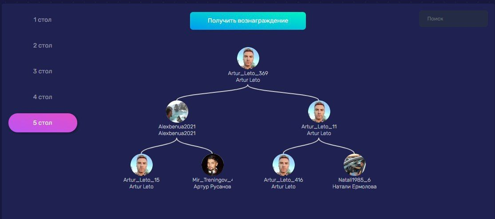
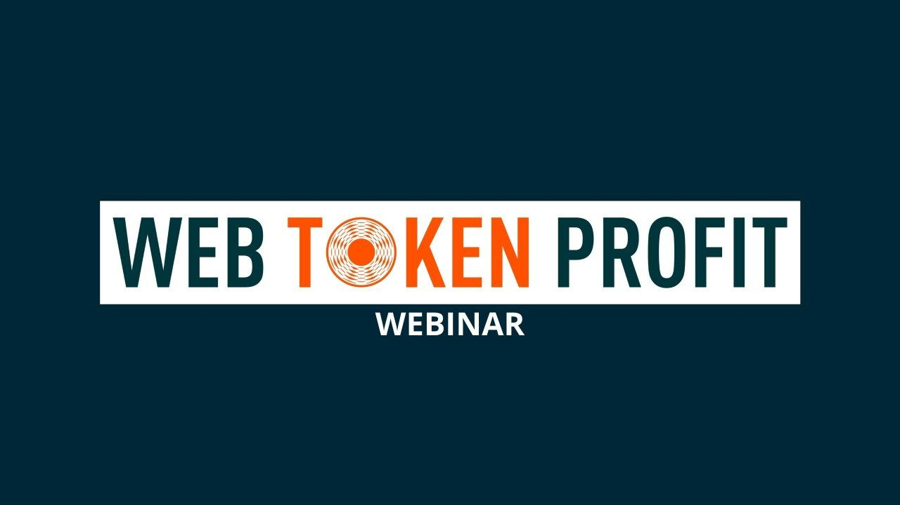
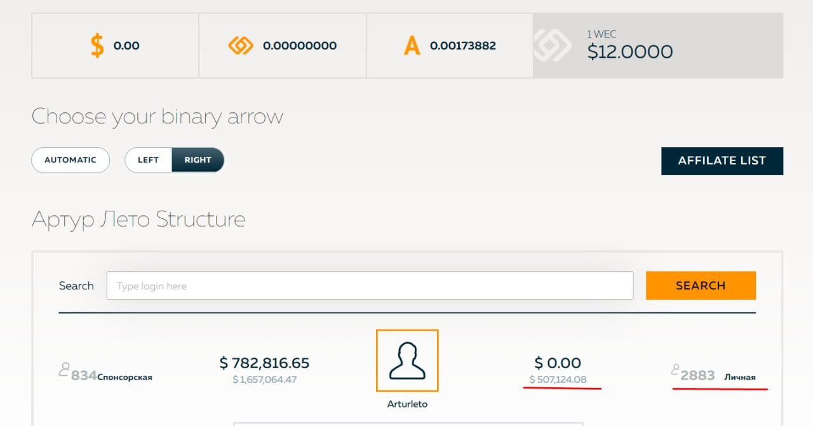

2019 - 2022 (3 года 4 месяца)
В 2019 году я осознанно вошёл в MLM-среду не потому, что искал «волшебную кнопку», а потому что хотел вернуться в активное общение с людьми. До этого я много лет занимался инфобизнесом и выстраивал процессы так, чтобы коммуникаций было минимум: воронки, переписки, продажи без созвонов.
MLM для меня стал противоположностью: люди, команды, энергия, обучение, публичные выступления, лидерство. Я хотел проверить себя именно в этой среде - как организатор, коммуникатор и человек, который умеет собирать вокруг себя структуру.
16 августа 2019 я подключился к DreamTrips на месяц и примерно на 3 недели поехал в Ростов-на-Дону к моему другу Илье Пивоварову, который меня позвал в проект, чтобы он лично включил меня в систему и помог разобраться.
Я глубоко погрузился в продукт и за этот месяц понял важную вещь:
если продукт сложно понять и сложно объяснить простыми словами, то его очень трудно продавать массово - людям проще отказаться, чем разбираться. Плюс я не увидел там очевидной выгоды, которую можно быстро донести.
Итог: на следующий месяц я не продлил участие. Но получил главное - понимание рынка MLM изнутри и первый опыт “полевой” коммуникации.
После DreamTrips я познакомился с матричными проектами. Меня зацепила идея: зачем усложнять продажу продуктом, если можно сосредоточиться на самой сути сетевого подхода - команде и структуре.
С этого момента я сформулировал стратегию: мой главный актив - команда. Проекты могут меняться, а команда и система обучения - остаются и усиливаются.
Далее я сделал два сильных видео, которые и сейчас выглядят актуально - как демонстрация моей логики, аргументации и умения объяснять сложные темы:
https://youtu.be/H9VLUzsXmVA?feature=shared
На создание у этого видео у меня ушло ровно 1 месяц. Текст, озвучка, монтаж, все сам.
На создание у этого видео у меня ушло ровно 1 месяц. Текст, озвучка, монтаж, все сам.
Я создал и развивал сообщество «ДНК денег и времени» - по сути, управляемую среду для командной работы, обучения и вовлечения.
Что я сделал как лидер и организатор:
Суть этого этапа: я развивал не «одну компанию», а систему навыков внутри команды, чтобы люди могли включаться и действовать. Участвовали сразу в нескольких матричных проектах.
в MLM люди постоянно дергаются на новые проекты и пытаются «перетащить» друг друга. Даже если внутри команды есть настрой на целостность, внешний шум ломает структуру. Этот опыт прокачал меня в управлении фокусом, ожиданиями и дисциплиной команды.

Дальше был проект BINX, который реально выделялся механикой вовлечения:
Это усиливало сплочённость: команда действовала синхронно и была в процессе.
Я получил там хороший результат, но затем мы упёрлись в тупик: попытались «нахитрить» и закольцеваться, в итоге ошиблись в расчётах и по сути переиграли сами себя. Это стало для меня отдельным уроком: в сложных моделях простая стратегия и дисциплина важнее “хитрых схем”.

Потом в моей жизни появился WebToken Profit (WTP). Я зашёл сам, получил результат, начал рассказывать об этом своей аудитории и партнёрам - и увидел сильную реакцию: многим стало интересно.
На этом этапе я действовал уже как growth-лид:

Личная структура: 2883 👆🏻
Это был потрясающий опыт: много знакомств, много людей, много контента, много Zoom-созвонов. Деньги зарабатывались «на жизнь», но я их не откладывал - это был период интенсивной практики и роста навыков.
Я умею собирать людей, выстраивать систему коммуникаций и удерживать среду управляемой: чаты, правила, ритм, синхронизация команды.
Я системно обучал людей прикладным навыкам: трафик, контент, тексты, Canva, видео, партнёрские коммуникации. Это реальный опыт “взрослого обучения” и доведения до действия.
Я умею запускать рост через связку: личный результат → контент → Zoom → подключение партнёров → масштабирование через людей с аудиториями.
Я умею спокойно и убедительно объяснять сложные/спорные темы, закрывать страхи аудитории и формировать доверие логикой и структурой.
Я быстро считываю проблемные места: сложный онбординг, неочевидная ценность, слабое удержание, высокий уровень хаоса и «расфокуса» у участников.
MLM-среда - это постоянный шум и попытки перетянуть людей. Я получил сильный опыт управления фокусом, ожиданиями и мотивацией внутри команды.
Я всегда хотел создать собственный матричный проект, но до этого не дошло. Если бы я начинал с нуля сегодня, я бы сделал свою матрицу в Telegram-боте и вёл людей сразу в неё:
чтобы онбординг был автоматизирован, обучение было встроено, правила были едины, а вход - максимально простой и понятный.